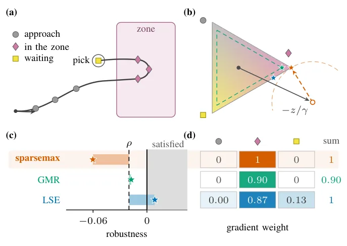
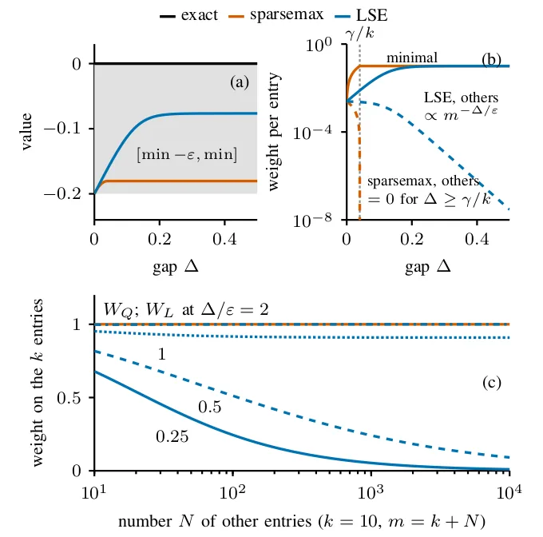
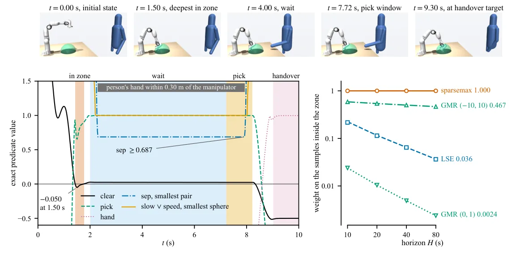

O Problema da Suavização em Lógica Temporal
Na otimização de trajetórias para robótica, garantir que um robô siga regras complexas de segurança e missão é essencial. Uma abordagem comum é usar Lógica Temporal de Sinais (STL), que atribui um valor escalar chamado robustez a cada trajetória. Se a robustez for positiva, a trajetória satisfaz a especificação; se for negativa, ela a viola. O problema é que a definição exata de robustez envolve mínimos e máximos aninhados, o que a torna não diferenciável. Para usar solucionadores baseados em gradiente, os pesquisadores precisam suavizar esses operadores, substituindo-os por funções suaves como o log-sum-exp (LSE).
No entanto, essa suavização introduz riscos graves em cenários de segurança crítica. Para que um solucionador seja confiável, a aproximação suave deve ter duas propriedades fundamentais. Primeiro, deve ser sonora: se a trajetória viola a especificação, a robustez aproximada deve ser negativa. Segundo, o peso que o gradiente atribui às amostras que violam a especificação não pode desaparecer à medida que o horizonte de tempo aumenta. Sem essas propriedades, o otimizador pode aceitar trajetórias perigosas ou falhar em corrigir violações iminentes.
As aproximações atuais, incluindo o log-sum-exp padrão, sua variante sonora e a robustez de média generalizada (GMR), não satisfazem simultaneamente ambas as propriedades. O LSE padrão pode ser positivo mesmo em trajetórias que violam a especificação, levando o solucionador a aceitar soluções inseguras. Variantes mais seguras tendem a diluir o gradiente nas amostras violadoras conforme o tempo passa, perdendo a capacidade de guiar o robô para fora de zonas de perigo.

Limitações das Aproximações Existentes
Para entender a falha das abordagens tradicionais, considere um manipulador robótico que deve evitar uma zona de perigo até coletar uma peça. A especificação STL envolve um operador until (até), que exige que a condição de segurança seja verdadeira até que a coleta ocorra. Se o robô entra na zona por um breve momento antes de coletar, a trajetória é violada. Em um horizonte longo, há centenas de amostras onde o robô está seguro e apenas algumas onde ele viola.
O log-sum-exp (LSE) substitui o máximo de um conjunto de valores z por beta^-1 log soma de e^(beta*z_i). Essa função é sempre maior ou igual ao máximo exato, podendo ser positiva mesmo quando o máximo exato é negativo. Isso viola a propriedade de sonoridade. Os autores chamam isso de LSE plano. Para corrigir isso, pode-se subtrair o excesso máximo, log m / beta, obtendo o LSE sonoro. No entanto, o gradiente do LSE sonoro é uma softmax, que atribui um peso positivo a todas as amostras. Em um horizonte longo, o peso nas poucas amostras violadoras tende a zero, pois o gradiente se dispersa pelas muitas amostras seguras.
A Robustez de Média Generalizada (GMR) tenta preservar o sinal da robustez exata, mas sofre de problemas semelhantes de alocação de gradiente. Quando o horizonte cresce, a influência do gradiente nas violações críticas se torna insuficiente para orientar o otimizador a corrigir o erro. Isso significa que, embora a GMR seja segura em teoria, na prática ela pode falhar em tarefas de longo prazo onde a correção rápida é necessária.
A Solução: Projeções SparseMax
Os autores propõem o SparseMax-dSTL, que utiliza aproximações por baixo dos operadores mínimo e máximo. Em vez de suavizar todos os valores igualmente, o SparseMax projeta os pesos em um simplexo, resultando em uma distribuição de pesos esparsa. Isso significa que apenas um subconjunto limitado de amostras recebe peso não nulo no cálculo do gradiente.
Matematicamente, o método constrói uma robustez aproximada que é sempre menor ou igual à robustez exata. Isso garante a propriedade de sonoridade: se a trajetória viola a especificação (robustez exata negativa), a aproximada também será negativa. Além disso, o erro da aproximação é limitado por um parametro gamma, e esse limite é independente do número de amostras no horizonte. Isso é crucial para a estabilidade em tarefas de longa duração.
A chave está na alocação do gradiente. O gradiente do SparseMax é exatamente zero para todas as amostras além de um limiar dependente dos dados. Isso garante que as amostras violadoras, que estão associadas aos valores extremos (minimos ou maximos), recebam um peso significativo e constante, independentemente de quantas amostras seguras existam no restante do horizonte. O peso nas amostras violadoras tem um limite inferior positivo, evitando que o gradiente se perca em ruido ou em trajetórias seguras.

Analise Teorica e Estabilidade do Gradiente
Os autores provam formalmente que a robustez construida com SparseMax satisfaz ambas as propriedades desejadas. O erro por no é limitado por gamma/2, independente do numero de amostras. Mais importante, o peso atribuido a k amostras que estao em um gap Delta acima dos demais e pelo menos min{1, k*Delta/gamma}. Isso significa que, enquanto houver uma violacao significativa, o gradiente focara nela.
Em contraste, para o LSE sonoro, o peso nas amostras violadoras tende a zero a medida que o numero de outras amostras cresce, especialmente se a diferenca entre a violacao e as amostras seguras for pequena. Isso ocorre porque a softmax distribui a probabilidade uniformemente sobre todos os elementos, diluindo a informacao critica. O SparseMax, por ser esparsa, ignora as amostras que nao contribuem para o extremo, mantendo o foco na violacao.
Essa estabilidade do gradiente e vital para solucionadores baseados em gradiente, como filtros de seguranca ou politicas de aprendizado por reforco. Se o gradiente for zero ou muito pequeno nas amostras violadoras, o otimizador nao recebera a sinalizacao necessaria para ajustar a trajetoria e evitar o colapso ou a violacao de seguranca.
Resultados Experimentais em Simulacao
Os autores avaliaram o metodo em duas configuracoes simuladas: um unicycle planar e um manipulador de sete graus de liberdade ao lado de uma pessoa. No caso do manipulador, a tarefa exigia evitar uma zona de alcance humano ate coletar uma peça, manter uma distancia minima e mover-se lentamente perto da pessoa.
Os resultados mostram claramente a falha do LSE. Em uma trajetoria inicial que violava a especificacao, o LSE plano retornava uma robustez positiva, indicando falsamente que a trajetoria era segura. O LSE sonoro, embora correto em sinal, tinha um peso de gradiente nas amostras violadoras que caia de 0.22 para 0.04 a medida que o horizonte crescia de 10 para 80 segundos. O SparseMax manteve o peso do gradiente em 1.0, garantindo que a violacao fosse sempre detectada e corrigida.
Na otimizacao de trajetorias, o LSE falhou em retornar uma trajetoria viavel que satisfizesse a especificacao, enquanto o SparseMax encontrou uma trajetoria que satisfazia a especificacao com a margem exigida. O GMR tambem apresentou desempenho inferior em termos de estabilidade do gradiente, com pesos caindo drasticamente em horizontes longos.

Limitacoes e Compromissos
O SparseMax-dSTL nao e uma solucao perfeita. A esparsidade do gradiente significa que ele ignora completamente amostras que nao estao no extremo. Em uma especificacao aninhada, isso pode esconder violacoes internas de nos superiores, pois o gradiente zero nao alerta o otimizador sobre amostras que estao prestes a se tornar criticas. Isso e uma limitacao inerente a esparsidade.
Além disso, a aproximacao por baixo pode rejeitar trajetorias que seriam viaveis se a margem de seguranca fosse apertada. O erro realizado pelo SparseMax e maior do que o do LSE sonoro para o mesmo parametro de suavizacao, o que significa que ele e mais conservador. Em cenarios onde a viabilidade e extremamente restrita, isso pode levar a falhas de encontrabilidade, onde nenhuma trajetoria e aceita pelo otimizador.
Os autores tambem notam que os operadores sao apenas continuamente diferenciaveis uma vez, o que limita a eficiencia de solucionadores de segunda ordem. Trabalhos futuros visam explorar a estrutura esparsa do Hessiano do SparseMax para permitir diferenciacao automatica esparsa, melhorando o desempenho computacional em problemas de grande escala.
Conclusao
O SparseMax-dSTL oferece uma contribuicao significativa para a otimizacao de trajetorias com restricoes de logica temporal. Ao combinar a sonoridade com a estabilidade do gradiente, ele resolve um problema pratico critico que afeta a confiabilidade de solucionadores baseados em gradiente em tarefas de longo prazo.
A abordagem demonstra que a escolha da funcao de suavizacao nao e apenas uma questao numerica, mas tem implicacoes diretas na seguranca e na capacidade de correcao do sistema. Para desenvolvedores de robótica autônoma e sistemas de controle critico, o SparseMax-dSTL representa uma ferramenta mais robusta do que as aproximacoes padrão, especialmente em ambientes dinamicos onde violacoes de seguranca devem ser detectadas e corrigidas imediatamente, independente da duracao da missao.
O que fica
- Aproximações suaves tradicionais (LSE) falham em manter a robustez sonora e o peso do gradiente em violações de longo prazo.
- SparseMax-dSTL usa projeções esparsas para garantir que o gradiente não desapareça em amostras violadoras.
- O método oferece limites de erro independentes do horizonte, garantindo segurança em tarefas robóticas críticas.
- Simulações mostram que LSE retorna trajetórias inválidas, enquanto SparseMax satisfaz as especificações.
Paper original: SparseMax-dSTL: Sound Robustness with Horizon-Independent Gradient Allocation for Temporal Logic Trajectory Optimization
Comentários
Nenhum comentário ainda. Seja o primeiro.